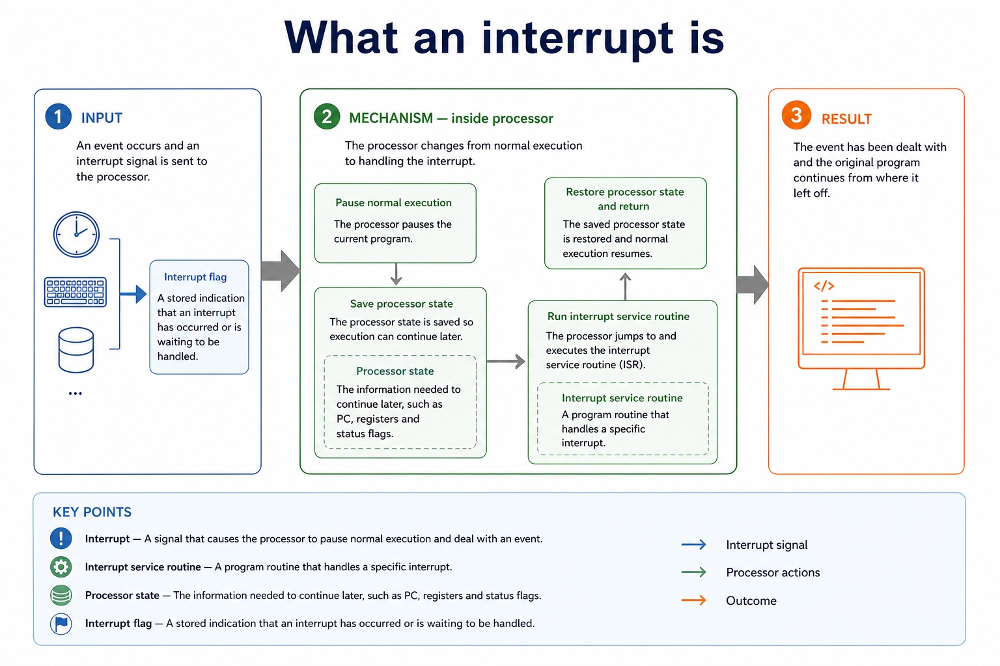
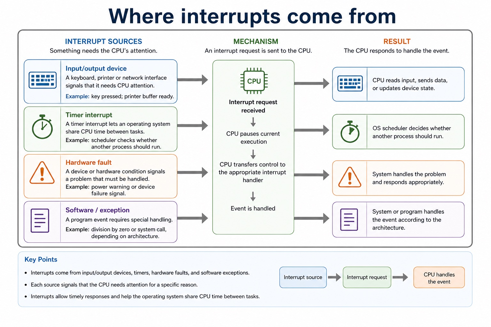

A processor normally follows the fetch-decode-execute cycle. An interrupt
signal asks it to pause that flow, save its current state, run an
interrupt service routine, and then return to the interrupted program.
Defineinterrupt, ISR, interrupt flag and processor state
Tracethe steps taken when an interrupt is accepted
Compareinterrupt-driven input with polling
Current programInterrupt signalSave stateRun ISRRestore state
The CPU is interrupted. The plan is not destroyed; it is bookmarked.
Why this matters
Section 4 questions often ask for a sequence. Marks are lost when answers say only "the CPU stops and deals with it".
Common trap
An interrupt is not an error by definition. It is a signal that can come from hardware, software, a timer or an exception.
Warm-up hook
The keyboard needs attention while a program is running. What should the CPU do?
Click the best answer. The wrong choices are what computers would do if they had no manners.
Choose one. A good interrupt explanation keeps the interrupted program recoverable.
Knowledge point 1
What an interrupt is
InterruptA signal that causes the processor to pause normal execution and deal with an event.Interrupt service routineA program routine that handles a specific interrupt.Processor stateThe information needed to continue later, such as PC, registers and status flags.Interrupt flagA stored indication that an interrupt has occurred or is waiting to be handled.
Chinese support: interrupt = 中断信号；ISR = 中断服务程序；processor state = 处理器当前状态；resume = 恢复继续执行。
What an interrupt is

What an interrupt is: source-grounded visual explanation.
Lesson fact: Interrupt
Lesson fact: A signal that causes the processor to pause normal execution and deal with an event.
Lesson fact: Interrupt service routine
Lesson fact: A program routine that handles a specific interrupt.
Lesson fact: Processor state
Lesson fact: The information needed to continue later, such as PC, registers and status flags.
Lesson fact: Interrupt flag
Lesson fact: A stored indication that an interrupt has occurred or is waiting to be handled.
Knowledge point 2
Where interrupts come from
Input/output deviceA keyboard, printer or network interface signals that it needs CPU attention.Example: key pressed; printer buffer ready.TimerA timer interrupt lets an operating system share CPU time between tasks.Example: scheduler checks whether another process should run.Hardware faultA device or hardware condition signals a problem that must be handled.Example: power warning or device failure signal.Software / exceptionA program event requires special handling.Example: division by zero or system call, depending on architecture.
Common trap
Do not write that all interrupts are "high priority errors". Some are routine, such as timer and I/O interrupts.
Where interrupts come from

Where interrupts come from: source-grounded visual explanation.
Lesson fact: Input/output device
Lesson fact: A keyboard, printer or network interface signals that it needs CPU attention.